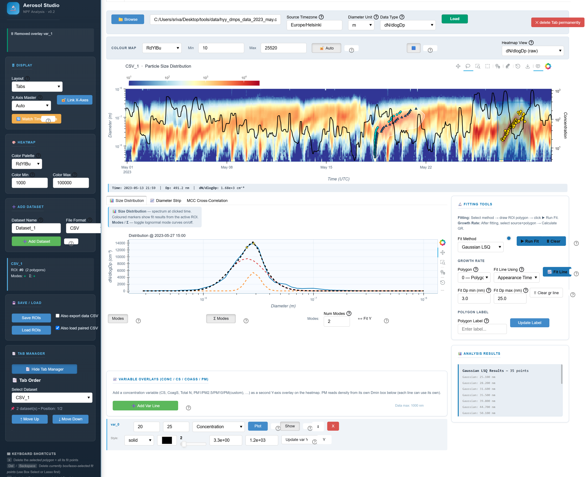

Aerosol Studio Documentation¶
Aerosol Studio is an interactive Python and Bokeh toolkit for aerosol particle size-distribution exploration, ROI-based analysis, growth-rate fitting, and reproducible GUI sessions.
The application is designed for research workflows where a scientist needs to load CSV or NetCDF particle-size data, inspect an event as a heatmap, draw one or more regions of interest, run fitting methods, and preserve the session for review or later analysis.
{kind=link}

Key Capabilities¶
CSV and NetCDF loading with explicit timestamp, diameter-unit, and data-type controls.
Interactive heatmap with display modes for dN/dlogDp, number concentration, surface density, and volume density.
Freehand and rectangular ROI workflows with save/load session support.
Fit methods for appearance time, mode diameter, Gaussian LSQ, GMM, and MCC cross-correlation.
Size-distribution, diameter-strip, and MCC diagnostic panels linked to heatmap clicks.
Variable overlays for concentration, condensation sink, coagulation sink, and PM metrics.
Scientific Use Disclaimer¶
Aerosol Studio provides an interface for aerosol particle size-distribution visualization and analysis methods. Users are responsible for evaluating the suitability of the methods and results for their particular application.
Methods and Citations¶
Aerosol Studio is a graphical interface for applying and inspecting aerosol particle size-distribution analysis methods. The maximum concentration method and the standard event growth-rate workflow follow Kulmala et al. (2012), "Measurement of the nucleation of atmospheric aerosol particles", Nature Protocols, 7, 1651-1667, https://doi.org/10.1038/nprot.2012.091.
The appearance-time method follows the appearance-time approach described for small clusters by Olenius et al. (2014), "Growth rates of atmospheric molecular clusters based on appearance times and collision-evaporation fluxes: Growth by monomers", Journal of Aerosol Science, 78, 55-70, https://doi.org/10.1016/j.jaerosci.2014.08.008.
The concentration, condensation sink, coagulation sink, particle-mass, and MCC calculations are provided through the aerosol-functions Python package where possible; Aerosol Studio focuses on data loading, interaction, visualization, ROI selection, fitting workflows, and reproducible GUI sessions.
The maximum cross-correlation growth-rate method follows Lampilahti et al. (2025), "A cross-correlation-based method for determining size-resolved particle growth rates", Aerosol Research, 3, 637-647, https://doi.org/10.5194/ar-3-637-2025.
Example Data¶
Example data: measurements from the SMEAR II station in Hyytiälä, Finland, provided by the University of Helsinki and licensed under CC BY 4.0. The data have been subset or processed for demonstration purposes.